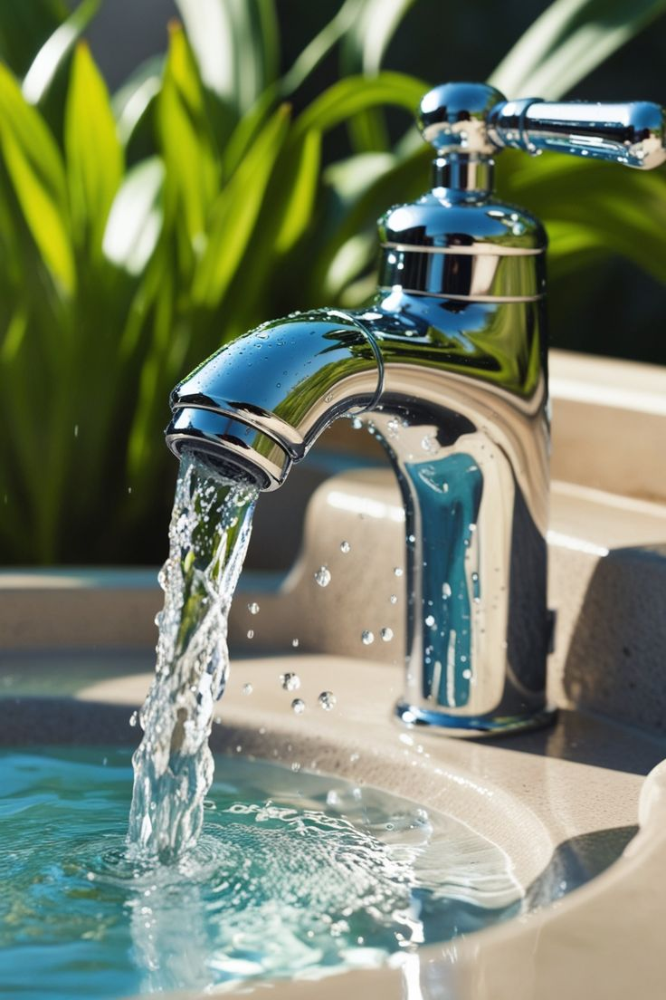
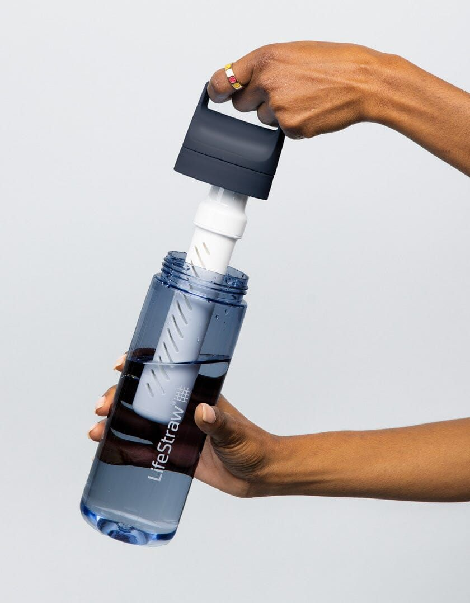
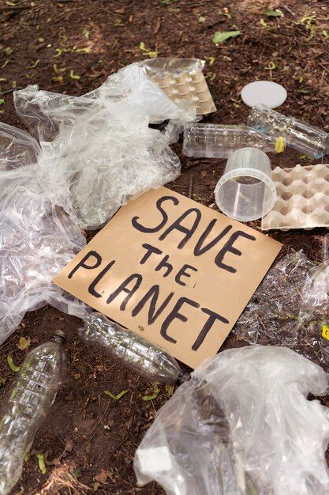
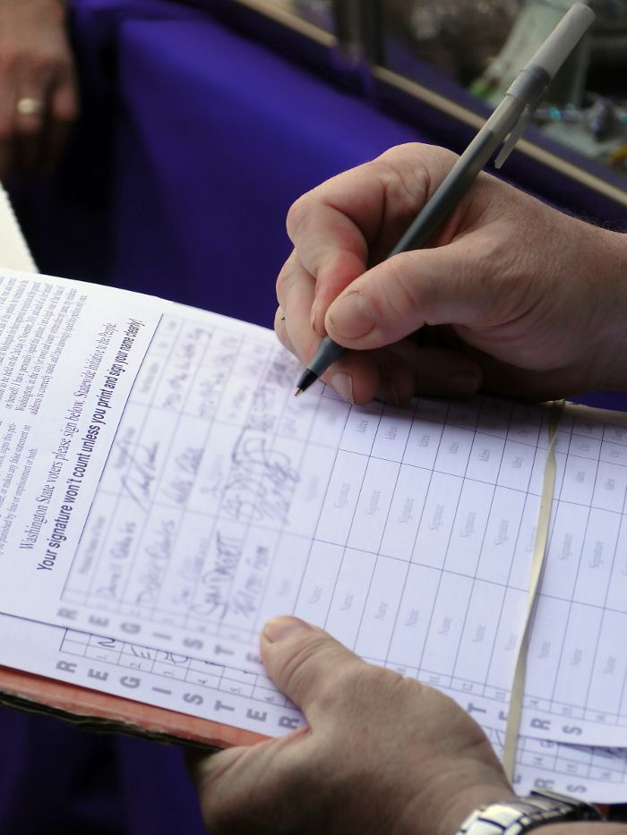
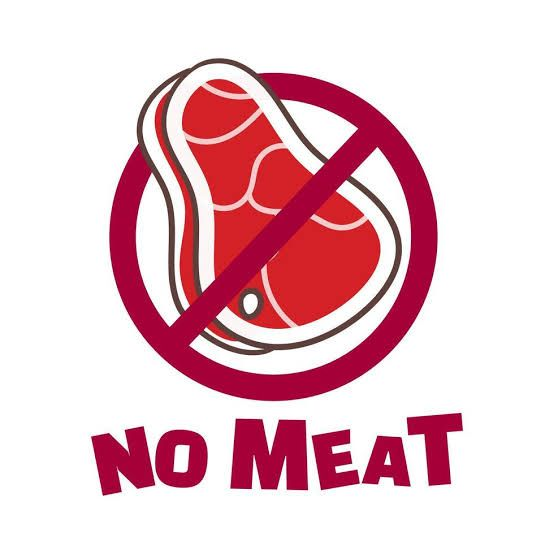

Fix Leaks & Cut Home Water Waste
Turn off taps when brushing teeth, fix dripping pipes, and switch to low-flow showerheads. Small daily habits reduce thousands of litres wasted each year.
Impact: 3 pointsSelect the actions you are willing to take. Every choice adds up. See your total impact score and discover the difference you can make.
There are no wrong answers — it is about exploring what is realistic for you.

Turn off taps when brushing teeth, fix dripping pipes, and switch to low-flow showerheads. Small daily habits reduce thousands of litres wasted each year.
Impact: 3 points
Replace single-use plastic bottles with a quality water filter. This reduces plastic pollution, lowers your carbon footprint, and cuts demand on municipal water treatment.
Impact: 2 points
Share verified facts about water scarcity with your network. Educating even five people creates a ripple effect — awareness is the first step toward large-scale change.
Impact: 2 points
Join local or international volunteer programmes focused on water access, sanitation infrastructure, or river clean-up. Direct action has the highest per-person impact.
Impact: 4 points
Sign and share petitions that push governments to fund water infrastructure. Write to your local representative. Policy change at scale is driven by sustained public pressure.
Impact: 3 points
Producing 1 kg of beef uses up to 15,000 litres of water. Reducing meat consumption — even one day a week — significantly lowers your personal water footprint.
Impact: 2 pointstotal impact points
0 of 6 actions selected